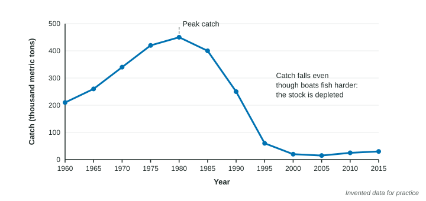

Impacts of Overfishing
Overfishing takes fish faster than they can reproduce, so stocks shrink and can collapse, as Atlantic cod did off Newfoundland in 1992.
Part 1 · Hook
Why this matters
Part 2 · Before you start
What this builds on
Part 3 · Prerequisite check
Quick check before you start
1. Why does a shared ocean fishery tend to be overused?
- Each boat keeps the full gain of its catch while the loss of fish is shared by all
- Fish are owned by the boats that live nearest to them
- Fishing boats are taxed for each fish they leave in the sea
- Fish populations grow faster when more of them are caught
Show the answer
Private gain and shared cost are the tragedy of the commons.
- Correct: Each boat keeps the full gain of its catch while the loss of fish is shared by all:
- Fish are owned by the boats that live nearest to them:
- Fishing boats are taxed for each fish they leave in the sea:
- Fish populations grow faster when more of them are caught:
2. What does a keystone species do?
- It has a much larger effect on its ecosystem than its numbers suggest
- It is the most common species in an ecosystem
- It is always a producer at the base of the food web
- It is the only species that eats a given prey
Show the answer
Removing a keystone species changes the whole community.
- Correct: It has a much larger effect on its ecosystem than its numbers suggest:
- It is the most common species in an ecosystem:
- It is always a producer at the base of the food web:
- It is the only species that eats a given prey:
Part 4 · See it
See it first

Part 5 · Step by step
How it works, step by step
- Boats catch fish faster than the fish can reproducethe stock shrinks year after year
- Large, older fish are caught firstfewer eggs are laid, so fewer young join the stock
- Fleets use bigger boats and better technology to keep catches upcatch holds steady for a while, hiding the decline
- The stock falls below the level it needs to rebuildthe fishery collapses and the food web around it changes
Part 6 · Key ideas
Key ideas
- Overfishing is catching fish faster than they reproduce. It is the tragedy of the commons at sea.
- Bycatch is everything caught that was not the target: dolphins, sea turtles, sharks, seabirds, young fish. Much of it dies.
- Bottom trawling drags heavy nets across the sea floor, destroying corals, sponges and the places where young fish shelter.
- A fishery collapse can take decades to recover, and removing a top predator or a forage fish changes the whole food web.
Part 7 · Misconception
A common mistake
The wrong idea: If the total catch is steady, the fish stock must be healthy.
What actually happens: A fleet that adds boats or better gear can hold the catch steady while the stock falls. Catch per unit of effort, such as catch per boat or per day of fishing, shows the decline earlier.
Part 8 · Check yourself
Check yourself
Exam-style questions. Anything you miss goes into your review queue.
1. What is bycatch?
- Animals caught by fishing gear that were not the target
- Fish caught by boats that have no license
- Fish sold at a lower price than the main catch
- The young fish of the target species released each year
Show the answer
Bycatch is the unwanted catch: other species, and often young fish, caught along with the target.
- Correct: Animals caught by fishing gear that were not the target: Right: anything caught that was not the target.
- Fish caught by boats that have no license: Fishing without a license is illegal fishing, a different problem.
- Fish sold at a lower price than the main catch: Price is not what defines bycatch.
- The young fish of the target species released each year: Released young of the target are not what the term means.
2. Why does catching the largest, oldest fish in a population first make overfishing worse?
- Large older females lay many more eggs, so fewer young are produced
- Large fish eat the small fish, so removing them lowers the population
- Large fish carry more parasites, which spread to the young fish
- Large fish leave the area first, so the rest of the school follows them
Show the answer
In many fish, egg production rises steeply with size. Taking the biggest fish removes the best breeders.
- Correct: Large older females lay many more eggs, so fewer young are produced: Right: removing big females cuts reproduction.
- Large fish eat the small fish, so removing them lowers the population: Removing predators would not explain a falling population of the same species.
- Large fish carry more parasites, which spread to the young fish: Parasites are not the reason size matters here.
- Large fish leave the area first, so the rest of the school follows them: Schooling behavior is not the main issue.
Model or diagram
Yearly catch in one fishery, 1960 to 2015
3. Which statement describes the graph?
- Catch peaked at 450 thousand metric tons in 1980, then fell to 20
- Catch fell from 1960 to 1980, then rose to a peak in the year 2000
- Catch stayed near 450 thousand metric tons from 1960 to 2015
- Catch rose steadily from 1960 to 2015 with a dip in 1995
Show the answer
The line rises to 450 in 1980 and drops to 20 in 2000.
- Correct: Catch peaked at 450 thousand metric tons in 1980, then fell to 20: Right: a peak in 1980 and a collapse by 2000.
- Catch fell from 1960 to 1980, then rose to a peak in the year 2000: The pattern is the reverse: up to 1980, then down.
- Catch stayed near 450 thousand metric tons from 1960 to 2015: The catch ranged from 15 to 450.
- Catch rose steadily from 1960 to 2015 with a dip in 1995: After 1980 it fell far, then recovered only a little.
4. Write the setup for the percent change in catch from the peak in 1980 to 2000, then give the answer.
Type the setup as on the exam, with brackets and units, then the answer.
Show the answer
- Setup: ; answer -95.6 %
5. Fishing was banned in 1995 and the catch shown after 1995 is from a small research fishery. What does the graph suggest about recovery?
- Recovery is slow: 20 years after the ban the catch is still far below the 1980 peak
- Recovery was fast: the catch returned to its 1980 level within five years of the ban
- The ban made things worse, since the catch kept falling for the next 20 years
- The ban had no effect, since the catch was the same before and after the ban
Show the answer
From 2000 to 2015 the catch rose only from 20 to 30, far below 450.
- Correct: Recovery is slow: 20 years after the ban the catch is still far below the 1980 peak: Right: a very slow recovery.
- Recovery was fast: the catch returned to its 1980 level within five years of the ban: The catch never came close to 450 after 1995.
- The ban made things worse, since the catch kept falling for the next 20 years: The catch rose slightly after 2005.
- The ban had no effect, since the catch was the same before and after the ban: The catch was 60 in 1995 and 30 in 2015.
6. A town depends on this fishery for jobs. What does the graph imply for the town's economy?
- Fishing jobs were lost in the 1990s and are unlikely to return soon
- Jobs tied to the fishery doubled in the 1990s as the catch rose
- The town's jobs were not affected because the catch did not change
- The town gained jobs in 1995 because the ban created new fishing work
Show the answer
A collapse from 450 to 20 thousand metric tons wiped out most fishing work, and slow recovery means it stays gone.
- Correct: Fishing jobs were lost in the 1990s and are unlikely to return soon: Right: collapse means lost jobs that are slow to return.
- Jobs tied to the fishery doubled in the 1990s as the catch rose: The catch fell in the 1990s; it did not rise.
- The town's jobs were not affected because the catch did not change: The catch changed enormously.
- The town gained jobs in 1995 because the ban created new fishing work: A ban on fishing does not create fishing jobs.
Data
Bycatch on one fishing trip
| Animal | Mass caught (kg) |
|---|---|
| Shrimp (target) | 1,200 |
| Small fish | 4,800 |
| Crabs | 900 |
| Sea turtles | 60 |
| Other animals | 240 |
7. What percent of the total mass brought on board was bycatch (everything except the shrimp)?
Type a number, then its unit (%). Scale words (2.5 million) and powers of ten (2.5 × 10^6) are read.
Show the answer
Total:
- Answer: 83.3 %
Part 9 · Summary
Summary
Part 10 · Up next
What comes next
Part 11 · Connections